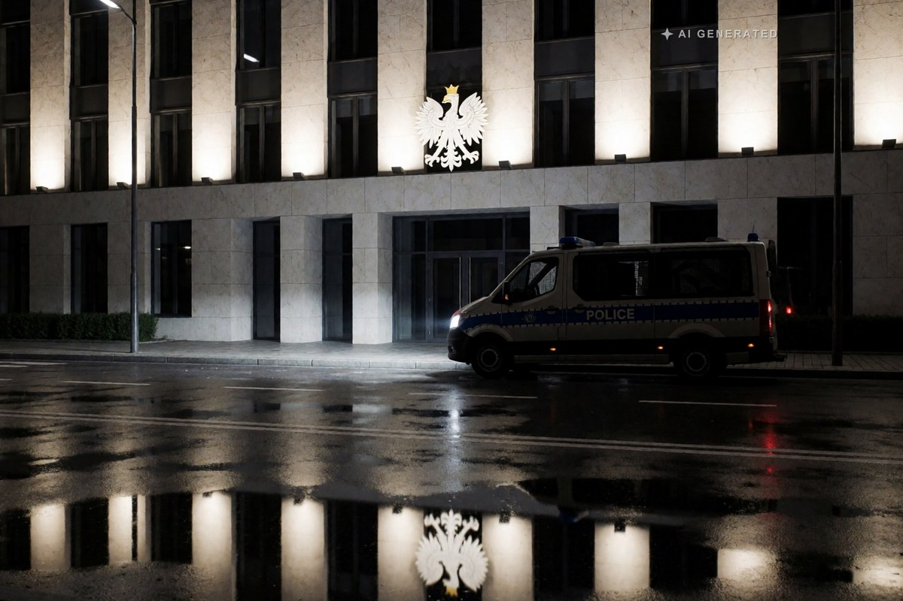

Geopolitica · 1 novembre 2026
Polonia, il presidente entra di notte nella Corte: «Voi non siete giudici»

Il presidente del Tribunale costituzionale sospeso da una collega, la polizia davanti all'edificio, un cancello tagliato da un fabbro. La destra parla di colpo di Stato, il governo di ritorno allo Stato di diritto.
di Franco Zanghì
In Polonia il potere è diviso in due. Il governo è guidato da Donald Tusk, un moderato di centro, europeista, già presidente del Consiglio europeo, sostenuto da una coalizione che va dai moderati alla sinistra. Il presidente della Repubblica è Karol Nawrocki, uno storico, eletto nel 2025 con l'appoggio del partito di destra Diritto e Giustizia, quello di Jarosław Kaczyński. E il presidente polacco non è una figura di cerimonia: può bloccare le leggi con il veto, e lo usa.
Poi c'è l'arbitro: il Tribunale costituzionale, quindici giudici che decidono se le leggi rispettano la Costituzione.
Dieci anni di guerra per l'arbitro
Nel 2015 vince la destra. Il Parlamento uscente aveva appena eletto alcuni giudici; la nuova maggioranza non li riconosce e ne elegge altri al loro posto. Da lì in poi la Corte si riempie di giudici scelti dalla destra. Nel 2021 la Corte europea dei diritti dell'uomo stabilisce, con la sentenza Xero Flor, che un collegio del Tribunale con uno di quei giudici non era un tribunale costituito per legge. L'Unione europea apre un procedimento sullo Stato di diritto e per anni tiene bloccati decine di miliardi di fondi.
Nel 2023 vince Tusk e l'anno dopo i fondi europei vengono sbloccati. Ma l'arbitro è rimasto quello: il governo non riconosce le sentenze del Tribunale, il Tribunale boccia le scelte del governo, il presidente della Repubblica sta con il Tribunale.
A ottobre il Parlamento elegge nuovi giudici. Nawrocki si rifiuta di riceverne il giuramento. Uno di loro, Maciej Berek, già ministro nel governo Tusk, giura davanti al Parlamento. E secondo il governo il presidente del Tribunale, Bogdan Święczkowski, non li lascia lavorare.
La notte di venerdì 30 ottobre
Alle 18, sul sito del Tribunale, compare l'annuncio: il presidente Święczkowski e il suo vice sono sospesi per un mese. A deciderlo è la giudice più anziana di nomina, Anna Korwin-Piotrowska, della nuova maggioranza, che si appoggia a una norma della legge del 2016 e alla richiesta del ministro della Giustizia, Waldemar Żurek, di togliere ai due l'immunità.
In serata arriva la polizia, chiamata dalla giudice per ragioni di sicurezza, e resta fuori dall'edificio. Un fabbro taglia un cancello laterale e il presidente sospeso entra nel cortile. Fuori si radunano migliaia di sostenitori della destra con le bandiere bianche e rosse; Kaczyński parla alla folla e chiama il Tribunale l'ultima fortezza.
Nawrocki in quel momento è in Senegal. Interrompe il viaggio, atterra a Varsavia poco prima delle 22 ed entra nel Tribunale. Ai giudici della nuova maggioranza dice: «Voi non siete giudici del Tribunale costituzionale». Sul modo in cui è entrato le versioni non coincidono: la giudice racconta che sia passato di forza, altri presenti danno una versione diversa.
Che cosa succede adesso
Sabato mattina un ambasciatore polacco si dimette per protesta e il presidente convoca i leader dei partiti. Il presidente sospeso manda in ferie il personale dal 3 al 6 novembre; la giudice, invece, convoca l'assemblea dei giudici proprio per martedì 3 novembre. In serata Tusk parla alla nazione: urla, bugie e risse, dice, non possono diventare fonte del diritto, e accusa una parte delle proteste di trovare sostegno in ambienti filorussi.
Il punto
Qui nessuno ha le mani pulite. La destra l'arbitro se l'è messo in tasca, e non è un'opinione: lo hanno scritto i giudici europei. Ma togliere di mezzo il presidente di una Corte con un fabbro e un cancello tagliato non è il modo di riparare uno Stato di diritto. Perfino la Fondazione Helsinki per i diritti umani, che negli anni della destra era stata tra le voci più critiche, dice di non vedere basi giuridiche chiare per quella sospensione.
Quando l'arbitro lo prendono a spallate tutte e due le squadre, chi perde sono i cittadini: i loro ricorsi restano fermi, e intanto ognuno si tiene la sua Corte.
E riguarda anche noi, perché la Polonia è il paese chiave del fianco est della Nato, al confine con l'Ucraina e con la Bielorussia. Un paese con due Tribunali è un paese più debole, proprio dove l'Europa ha più bisogno di essere forte. Martedì 3 novembre si vedrà chi entra nel Tribunale: lì si capirà chi comanda davvero.
Fonti
- Rzeczpospolita, diretta sulla crisi del Tribunale costituzionale, 31 ottobre 2026
- TVN24, diretta del 30 e 31 ottobre 2026
- Super Express, discorso alla nazione di Donald Tusk, 31 ottobre 2026
- Il Fatto Quotidiano, «Crisi istituzionale in Polonia: manifestanti alla Corte costituzionale dopo la sospensione di Święczkowski», 31 ottobre 2026
- Quotidiano Nazionale, «Polonia, la polizia schierata a difesa della Corte costituzionale», 31 ottobre 2026
- Notizie Geopolitiche, «Polonia, il presidente Nawrocki entra di notte nel Tribunale costituzionale», 31 ottobre 2026
- InsideOver, «Colpo di Stato in Polonia?», 31 ottobre 2026
- Corte europea dei diritti dell'uomo, sentenza Xero Flor contro Polonia, 7 maggio 2021
La vicenda è in corso. Le espressioni «colpo di Stato» e «ritorno alla legalità» sono rispettivamente della destra e del governo e non sono valutazioni di questo sito. Sul modo in cui il presidente Nawrocki è entrato nell'edificio le versioni dei presenti non coincidono. L'esito delle consultazioni convocate al Palazzo presidenziale non era noto alla data di pubblicazione.